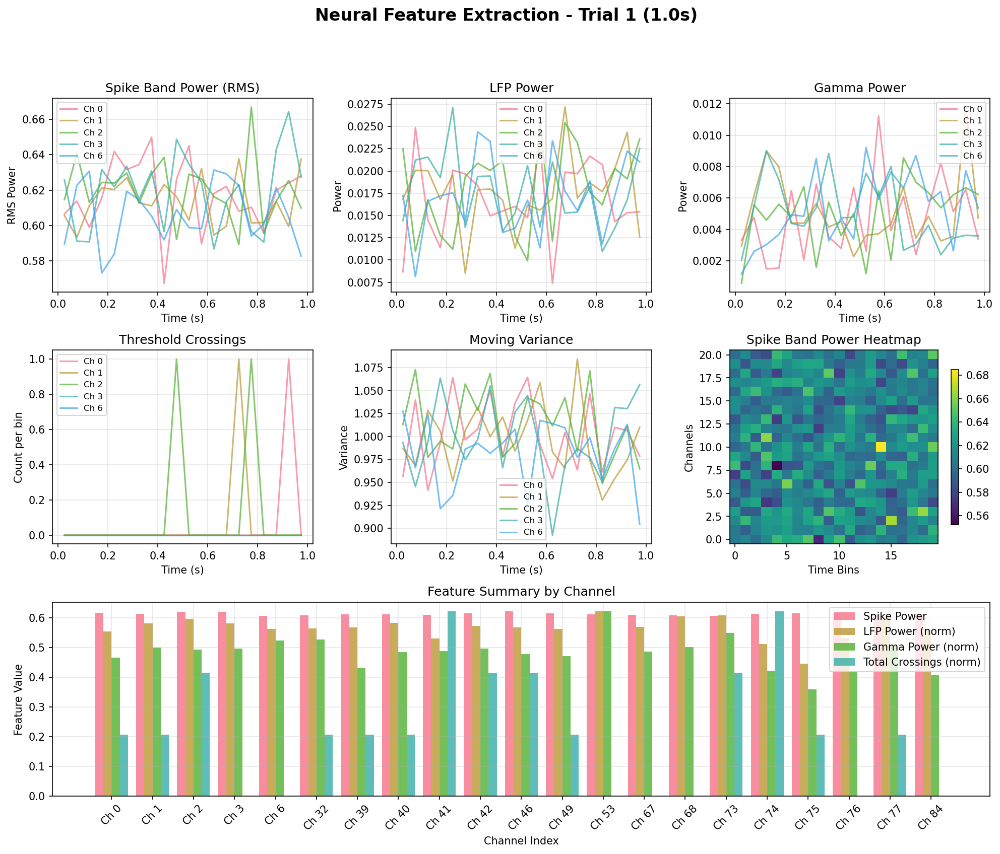
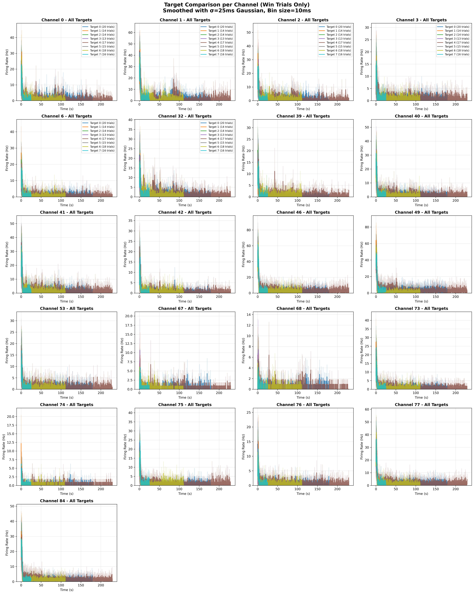
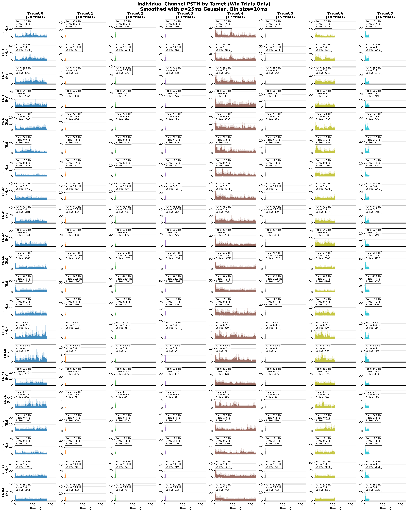
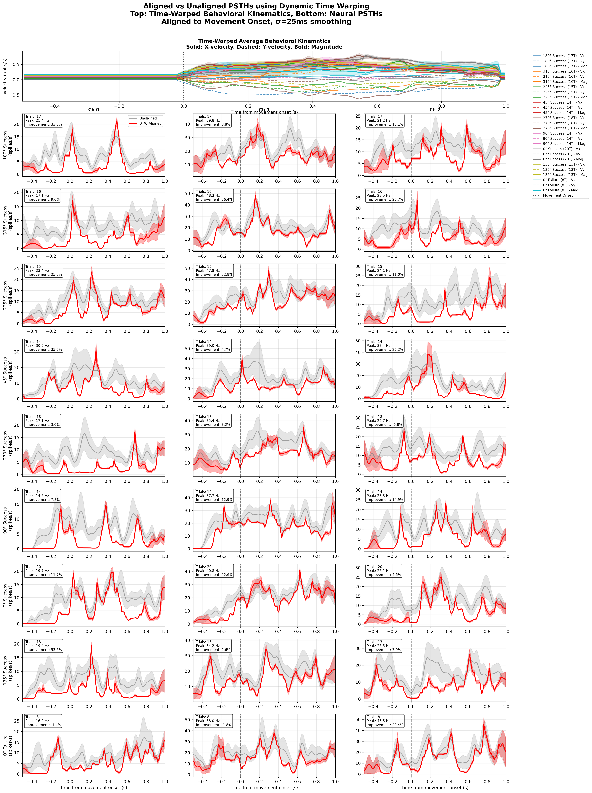

This report presents a comprehensive analysis of neural data from a 96-channel Utah array implanted in the hand knob area of M1 in a cynomolgus macaque performing a center-out task. The analysis successfully integrated .ns6 neural recordings with behavioral CSV data, performed spike detection and feature extraction, analyzed behavioral performance, and attempted velocity decoding.
Trials Successfully Integrated
Task Success Rate
Active Neural Channels
Decoding R² Performance
Raw .ns6 files (Blackrock format) and behavioral CSV files were integrated using a custom HDF5-based pipeline for efficient trial-segmented data storage.
The macaque performed a center-out reaching task with 8 radial targets, demonstrating excellent overall performance with clear behavioral patterns.
Behavioral performance metrics were analyzed across all trials, showing excellent task performance with 90.7% success rate.
Detailed analysis available in: behavioral_feature_exploration.ipynb
| Metric | Value | Details |
|---|---|---|
| Total Trials | 140 | Complete dataset |
| Success Rate | 90.7% | 127 wins, 13 losses |
| Reaction Time (Mean) | 6.114 ± 28.753s | Highly variable, median: 0.359s |
| Movement Time (Mean) | 2.203 ± 0.874s | Consistent execution |
| Max Speed (Mean) | 0.796 ± 0.179 | units/s |
| Endpoint Error (Mean) | 0.630 ± 0.171 | Consistent accuracy |
Success rate and timing metrics broken down by target direction (0°, 45°, 90°, 135°, 180°, -135°, -90°, -45°)
Generated by: behavioral_feature_exploration.ipynb
| Target | Direction | Trials | Success Rate | Reaction Time (s) | Movement Time (s) |
|---|---|---|---|---|---|
| 0 | 90° | 28 | 71.4% | 12.897 | 2.847 |
| 1 | 45° | 14 | 100.0% | 0.357 | 1.910 |
| 2 | 0° | 16 | 87.5% | 0.284 | 2.286 |
| 3 | -45° | 13 | 100.0% | 0.481 | 1.785 |
| 4 | -90° | 18 | 94.4% | 18.019 | 2.299 |
| 5 | -135° | 15 | 100.0% | 0.585 | 1.726 |
| 6 | 180° | 19 | 94.7% | 6.158 | 1.885 |
| 7 | 135° | 17 | 94.1% | 1.703 | 2.298 |
21 channels with clear spike activity were identified through systematic inspection, using PyWaveClus-style detection methodology.

Four types of neural features were extracted to capture different aspects of neural activity:
400-6000 Hz, RMS power in 50ms bins
<250 Hz, Gamma band (30-100 Hz)
Moving average and variance
Semi-spike detection method

| Metric | Value |
|---|---|
| Total Spikes Detected | 900 spikes |
| Mean Firing Rate | 13.5 Hz |
| Active Channels (>50 spikes) | 8/21 |
| Mean SNR | 6.84 |
| High-quality Channels (SNR >3) | 17/21 |
| Top Channel (74) | 89 spikes |


A Ridge regression model was trained to predict 2D velocity from neural firing rates, using 21 channels in 50ms time bins.
Cross-validation results showed limited linear relationship between neural features and instantaneous velocity, indicating the need for alternative decoding approaches.
Analysis available in: decode_velocity_regression.ipynb
| Metric | Value | Interpretation |
|---|---|---|
| R² Velocity X | -0.002 | Poor prediction performance |
| R² Velocity Y | -0.013 | Below chance level |
| Mean R² | -0.008 | Model performs worse than mean |
| Cross-Validation R² | -0.065 ± 0.075 | Consistent poor performance |
| Best Regularization | α = 1000.0 | High regularization needed |
Future work should explore non-linear decoding methods, different temporal windows, and population vector algorithms to improve velocity prediction performance.
Analysis available in: decoding_exploration.ipynb
This comprehensive neural data exploration successfully established a robust pipeline for integrating neural recordings with behavioral data, extracted meaningful behavioral patterns, and identified neural activity related to movement. While the linear decoding approach had limited success (R² ≈ -0.008), this provides valuable insights for future decoder development.
The established infrastructure provides an excellent foundation for exploring more sophisticated decoding approaches, including non-linear methods, spectral features, and temporal modeling. The behavioral patterns are clearly extractable, and the neural signals show movement-related modulation, suggesting that alternative feature extraction and modeling approaches may yield significantly better decoding performance.
Contact: Nader Nikbakht (nikbakht@mit.edu)
Repository: Complete analysis code and utilities available
Reproducibility: All analyses documented and reproducible
Generated: January 2025 | Neural Data Exploration Take-Home Challenge